Luma
Ein Mehrspur-Audiomischer für Linux. Spiele viele Spuren gleichzeitig ab und steuere jede nach deinen Wünschen: Lautstärke, Balance, Fades, Effekte und mehr.
Was ist Luma
Luma ist wie ein Mischpult auf deinem Computer. Jede Audiospur (ein Lied, ein Soundeffekt, ein Voice-over…) liegt auf einem eigenen Kanal, und du entscheidest, wie sie klingt und wann: Lautstärke hoch oder runter, nach links oder rechts, Effekte hinzufügen, ein- oder ausblenden und an die einen oder anderen Lautsprecher senden.
Es ist für Live-Veranstaltungen, Radio, Theater, Events oder jede Situation gedacht, in der du mehrere Audios zuverlässig starten und mischen musst. Du brauchst keine technischen Kenntnisse: Diese Anleitung führt dich Schritt für Schritt.
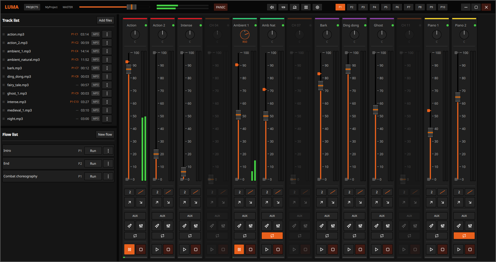
1Erste Schritte
Wenn du Luma zum ersten Mal öffnest, siehst du den Willkommensbildschirm. Hier wählst du, womit du arbeiten möchtest:
- Neues Projekt: erstellt ein leeres Projekt. Gib ihm einfach einen Namen und wähle einen Speicherort.
- Projekt öffnen: öffnet ein bereits vorhandenes Projekt.
- Zuletzt verwendete Projekte: schneller Zugriff auf das zuletzt Geöffnete. Das ✕ in jeder Zeile entfernt es aus der Liste (mit Rückfrage; es wird nichts von der Festplatte gelöscht, nur die Verknüpfung).
- Über: Informationen zur App (Version, Lizenz).
Beim nächsten Start öffnet Luma automatisch das zuletzt bearbeitete Projekt wieder (änderbar in den Einstellungen).
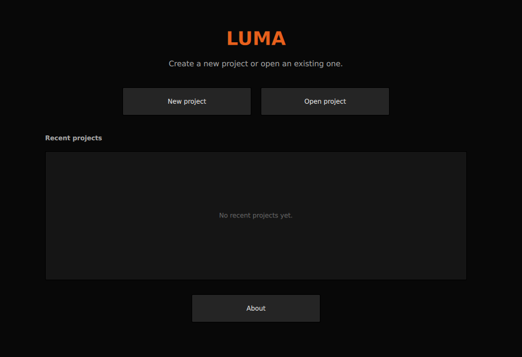
2Projekte
Ein Projekt enthält deine gesamte Arbeit: die Spuren, die Einstellungen jedes Kanals, die Presets und die Flows. Jedes Projekt ist ein Ordner, den du bedenkenlos kopieren, verschieben oder auf einen anderen Rechner mitnehmen kannst.
Ein Doppelklick auf eine .luma-Datei im Dateimanager öffnet sie direkt in Luma.
3Das Hauptfenster
Der Bildschirm ist in drei Bereiche unterteilt:
- Oben: die Leiste mit dem Projekt, der Gesamtlautstärke und den Presets.
- Links: die Spurliste (oben) und die Flow-Liste (unten).
- Rechts: die Kanäle, wo du mischst.
4Die obere Leiste
- PROJECTS: schließt das aktuelle Projekt und kehrt zum Willkommensbildschirm zurück.
- MASTER: die Gesamtlautstärke der Mischung, mit Pegelanzeige.
- PANIC: die Notfalltaste. Stoppt alle Audios sofort.
- Optionen: Audioausgänge, Anzahl der Kanäle, umsortieren, Raster und Einstellungen.
- Preset-Tasten (P1…P10): wechsle zwischen deinen gespeicherten Szenen.
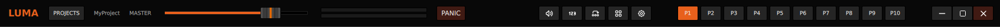
5Spurliste
Das ist die Audiobibliothek deines Projekts (oben links).
- Dateien hinzufügen: importiere Audios im Format WAV, MP3, OGG oder FLAC. Sie werden automatisch alphabetisch sortiert.
- Zu jeder Spur siehst du Name, Dauer, Format und in welchen Kanälen sie verwendet wird.
- Eine Spur verwenden: ziehe sie auf einen Kanal, oder nutze ihr Menü und wähle Bind, um sie zuzuweisen.
- Das Menü hat auch Remove zum Entfernen (mit Rückfrage; die Kopie im Projekt wird gelöscht).
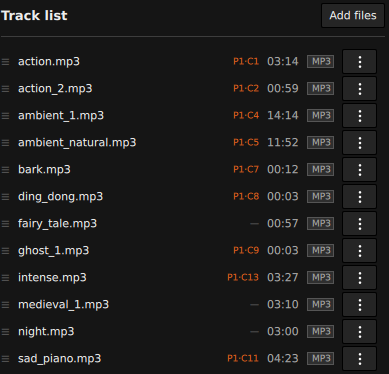
6Kanäle
Jeder Kanal ist eine Spalte, die eine Spur abspielt. Von oben nach unten hast du:
- Farbleiste und Name (Doppelklick zum Umbenennen). Die Farbe hilft, Kanäle auf einen Blick zu erkennen.
- Balance: verschiebt den Klang nach links oder rechts.
- Lautstärke: der große Regler mit Pegelanzeige. Er hat zwei Marker, die festlegen, wie weit Fades hoch- oder heruntergehen.
- Fades: Tasten, um die Spur sanft erscheinen (fade in) oder verschwinden (fade out) zu lassen. Du kannst die Dauer in Sekunden und die Kurvenart einstellen.
- AUX: sendet diesen Kanal an den Aux-Ausgang statt an den Hauptausgang.
- Effekte und Equalizer: öffnen ihre Panels (Abschnitte 7 und 8). Sie leuchten auf, wenn aktiv.
- Wiederholen: spielt die Spur in einer Schleife.
- Wiedergabe / Pause und Stopp.
- Fortschrittsleiste: zeigt, wo die Spur steht; klicke sie an, um den abzuspielenden Teil zuzuschneiden (Abschnitt 9).
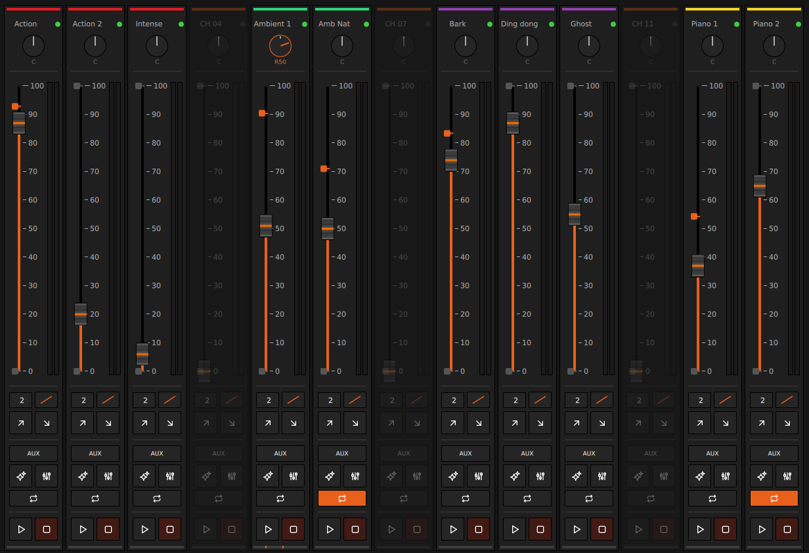
7Effekte
Jeder Kanal hat fünf Effekte, die du einzeln einschalten kannst. Jeder merkt sich seine Werte auch im ausgeschalteten Zustand, und es gibt eine Taste, um zu den Standardwerten zurückzukehren.
| Effekt | Wofür | Regler |
|---|---|---|
| Reverb | Gibt ein Raumgefühl, als spiele es in einem Saal. | Raumgröße, Dämpfung, Mix |
| Delay | Erzeugt ein wiederholtes Echo. | Time (bis 1 s), Feedback, Mix |
| Distortion | Macht den Klang schmutziger und sättigt ihn. | Drive (1–50), Mix |
| Pitch | Ändert die Tonhöhe ohne die Geschwindigkeit. | −12 bis +12 Halbtöne |
| Speed | Ändert die Geschwindigkeit ohne die Tonhöhe. | 0,5× bis 2× |
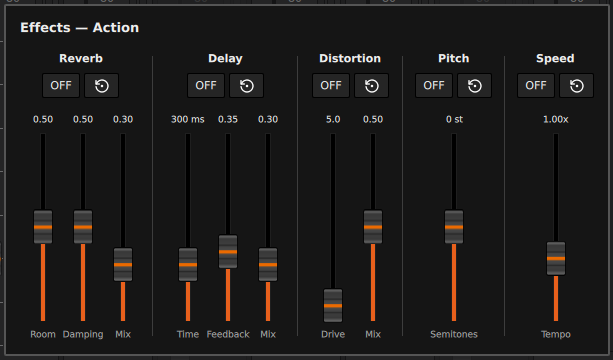
8Equalizer
Mit dem Equalizer kannst du verschiedene Frequenzen des Klangs anheben oder absenken: Bässe, Mitten und Höhen. Er hat 10 Bänder (von 32 Hz bis 16 kHz), jedes um bis zu ±12 dB.
Zum Beispiel: die tiefsten Bänder absenken, um Dröhnen zu entfernen, oder die hohen anheben für mehr Brillanz.
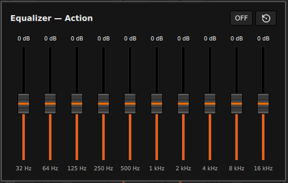
9Eine Spur zuschneiden
Wenn du nur einen Teil einer Spur abspielen willst, klicke auf ihre Fortschrittsleiste. Es öffnet sich ein Fenster, in dem du:
- die gesamte Dauer und die aktuelle Position siehst.
- einen Anfang und ein Ende setzt, um nur diesen Teil abzuspielen.
- den Anfangs- oder End-Zuschnitt löschst oder die ganze Spur zurücksetzt.
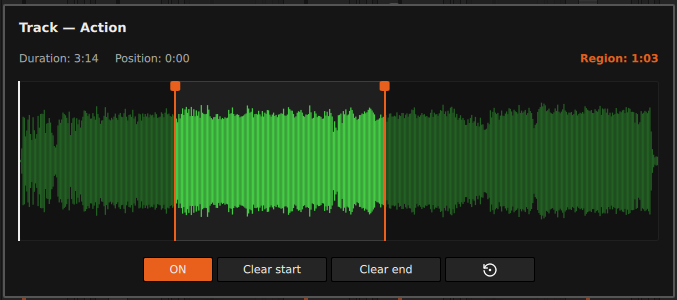
10Presets (Szenen)
Ein Preset ist eine vollständige Momentaufnahme des ganzen Pults: welche Spur jeder Kanal hat, Lautstärken, Effekte, Farben… Du hast 10 Presets (P1 bis P10) pro Projekt.
Sie sind praktisch, um verschiedene Momente einer Veranstaltung vorzubereiten. Zum Beispiel: P1 für den Einlass, P2 für den Hauptteil, P3 für den Abschluss. Du wechselst mit einem Klick.
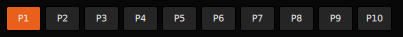
11Flows
Flows automatisieren die Wiedergabe: statt jede Spur von Hand zu starten, definierst du eine Abfolge, und Luma führt sie für dich aus. Ideal, um Audios mit sanften Übergängen zu verketten.
Einen Flow erstellen
Drücke in der Flow-Liste (unten links) New flow. Es öffnet sich ein Editor mit einer Leinwand, auf der du die Abfolge wie eine kleine Karte aufbaust:
- Schritte hinzufügen: klicke einen Kanal in der Liste an, um ihn als „Knoten“ auf die Leinwand zu setzen. Derselbe Kanal darf mehrmals vorkommen.
- Verbinden: ziehe vom Ausgangspunkt eines Knotens zum nächsten, um sie zu verknüpfen. Der Punkt START markiert den Anfang.
- Auf der Leinwand bewegen: ziehe den Hintergrund oder nutze das Rad; Strg + Rad zum Zoomen.
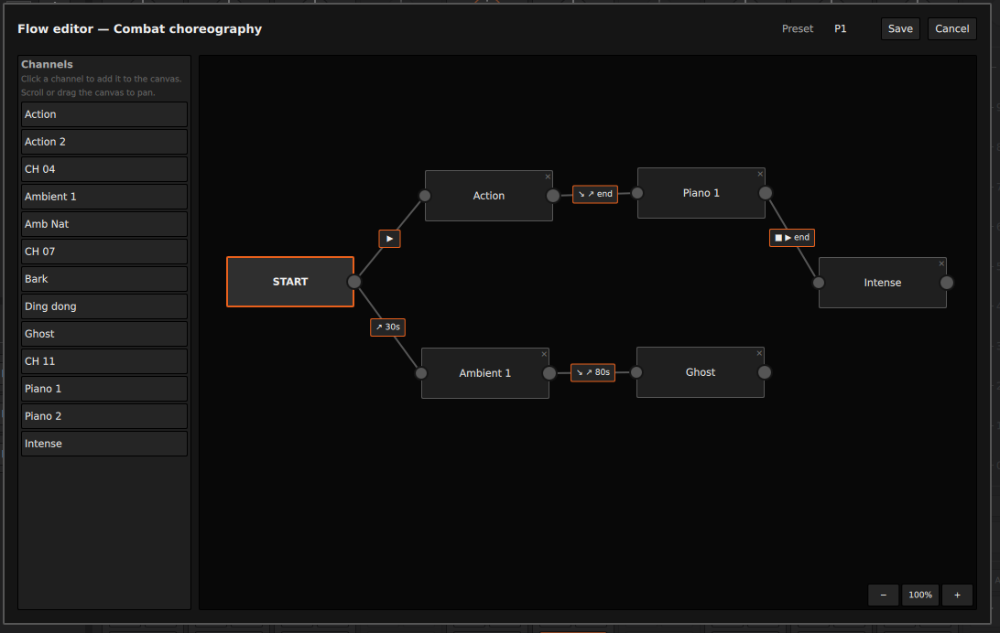
Jeden Schritt konfigurieren
Doppelklicke einen Knoten, um festzulegen, wie dieser Kanal klingen soll, wenn der Flow ihn aktiviert (Lautstärke, Fade, Schleife, Startpunkt, Effekte…).
Klicke eine Verknüpfung an, um zu bestimmen, wann es zum nächsten Schritt geht und was passiert:
- Auslöser: sofort, nach einigen Sekunden oder wenn die vorherige Spur endet.
- Am Ursprung: nichts tun, fade out oder stoppen.
- Am Ziel: direkt abspielen oder mit einem fade in einsteigen.
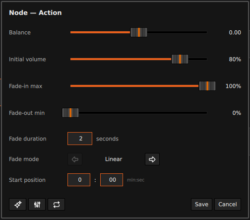
Ausführen
Drücke Run, um den Flow zu starten. Die beteiligten Kanäle zeigen einen blinkenden Rand, damit du sie erkennst, und du kannst das Pult während der Ausführung weiter bedienen. Der Flow endet von selbst, mit Stop oder mit PANIC; danach kehren die Kanäle in ihren vorherigen Zustand zurück.
12Audioausgänge
Luma kann den Ton an zwei verschiedene Ausgänge senden:
- Main: wohin die meisten Kanäle gehen.
- Aux: wohin die Kanäle mit aktivierter AUX-Taste gehen.
Im Ausgänge-Dialog wählst du, welches Gerät jeder Ausgang nutzt (z. B. Lautsprecher fürs Publikum und Kopfhörer für dich), oder du lässt das Standardgerät des Systems.
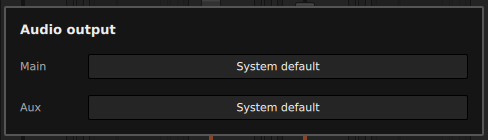
13Mischpult-Einstellungen
- Anzahl der Kanäle: wähle, wie viele Kanäle du willst (1 bis 40). Beim Verringern wirst du gewarnt, dass die Konfiguration der letzten verloren geht.
- Kanäle umsortieren: aktiviert einen Modus, um die Reihenfolge der Kanäle zu ändern.
- Rastermodus: ordnet die Kanäle in zwei Reihen an, praktisch bei vielen Kanälen.
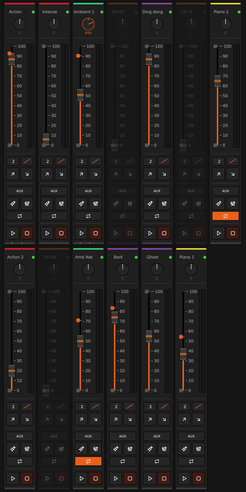
14Einstellungen
- Letztes Projekt beim Start öffnen: legt fest, ob Luma deine Arbeit automatisch fortsetzt.
- Sprache: ändert die Oberflächensprache (wirkt nach Neustart). Verfügbar auf Englisch, Spanisch, Französisch, Deutsch, Italienisch, Portugiesisch und Niederländisch.
- Größe des Audio-Cache und Cache neu aufwärmen: Leistungseinstellungen, damit Spuren ohne Verzögerung abspielen.
- Tastenkürzel: du kannst jedes Kürzel neu belegen. Drücke seine Taste und dann die gewünschte Tastenkombination.
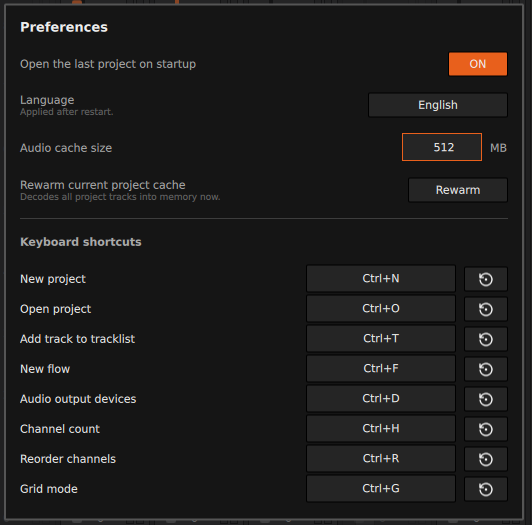
15Tastenkürzel
Standardwerte (in den Einstellungen änderbar):
| Aktion | Kürzel |
|---|---|
| Neues Projekt | Strg + N |
| Projekt öffnen | Strg + O |
| Spur zur Liste hinzufügen | Strg + T |
| Neuer Flow | Strg + F |
| Audioausgänge | Strg + D |
| Anzahl der Kanäle | Strg + H |
| Kanäle umsortieren | Strg + R |
| Rastermodus | Strg + G |
| Master auf Minimum | Strg + M |
| Panic (alles stoppen) | Strg + K |
| Einstellungen | Strg + P |
| Preset 1…10 wählen | F1 … F10 |